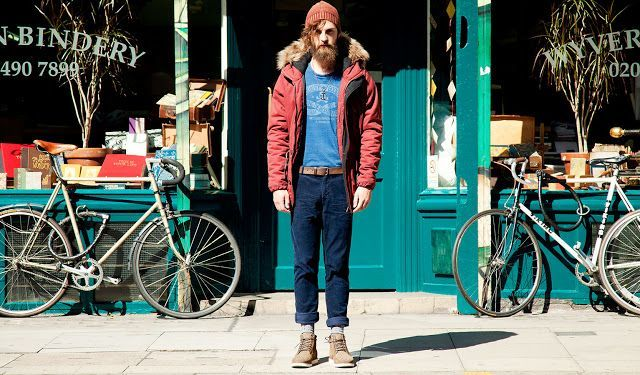

S T O R Y

Hípster es una subcultura de jóvenes bohemios de clase media-alta que se establecen por lo general en las civilizaciones o también en las comunidades que experimentan procesos de crecimiento inteligente y gentrificación. Se asocian a tendencias musicales indie y alternativas, a una moda alejada de las corrientes predominantes, basados más en lo independiente (que incluye artículos vintage), a posiciones políticas green, al consumo de alimentos orgánicos, productos artesanales y ropa de segunda mano.
Se caracteriza por una sensibilidad variada, alejada de las corrientes culturales predominantes (mainstream) y afín a estilos de vida alternativos.
En el nuevo milenio el término se usa para describir la tendencia hacia lo «alternativo» o la «antimoda», una subcultura o moda urbana enraizada en las clases medias o clases altas, compuesta por gente joven moviéndose de sus barrios al centro de la ciudad. En la cultura juvenil, hipster usualmente se refiere a personas jóvenes con gusto por la música alternativa, el skateboarding u otros deportes urbanos, con un sentido irónico de la moda o una u otra manera de estilo «bohemio».
Ellos pueblan las metrópolis que están de moda, ven el mundo a través de unas enormes gafas de pasta y se dedican a profesiones mediáticas. Estamos hablando de los hipsters. Siguen la tendencia de la moda y al mismo tiempo simbolizan la superficialidad y la arrogancia. Sus señas de identidad son las gafas de pasta y la bolsa de yute. Sin embargo, el hipsterismo implica mucho más que el aspecto externo.
Hipsters are people who enjoy clothing, music, food and activities considered outside of the social mainstream. If you're keen on pursuing the hipster lifestyle in which independent music labels, vintage clothes, and artisanal coffee feature prominently, the following suggestions will help you to discover myriad ways to embrace it fully.
